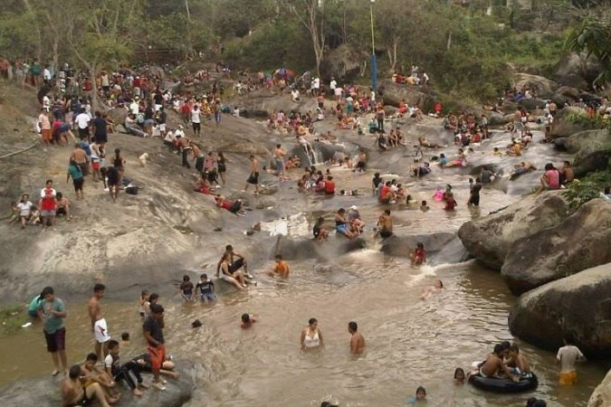

PASAJE - EL ORO - BALNEARIOS
PASAJE - EL ORO - BALNEARIOS
PASAJE - EL ORO - BALNEARIOS
PASAJE - EL ORO - BALNEARIOS
El balneario pertenece a la Parroquia Rural Progreso, del Cantón Pasaje. Es uno de los sitios favoritos escogidos tanto por los turistas nacionales como extranjeros, por ser uno de lugares más importantes del turismo, en éste balneario siempre existe visitantes durante todo el año.
En las orillas del río Casacay se encuentra el Balneario La Cocha, ubicado en la parroquia Casacay, del cantón Pasaje. Este balneario es visitado por turistas tanto nacionales como extranjeros quienes puedan disfrutar del agua y de la naturaleza que lo rodea. Aquí se han depositado gigantezcas piedras, las que llaman la atención por sus caprichosas formas dando realce al paisaje.
Las Cavernas y Balneario de Chillayacu está a 45 minutos, aproximadamente 2.68km de la zona urbana Pasaje ( Machala), tiene lugares para práctica del turismo de aventura y realizar deportes extremos como canyoning, descenso de montaña o rocas, senderismo, ciclismo de montaña, etc. Además, la zona posee un extenso bosque, rutas de montaña, cavernas, senderos naturales, espejos de agua sobre rocas, zonas de vegetación silvestre y cascadas que impresionan forman parte del escenario que tiene el cantón Pasaje.
>